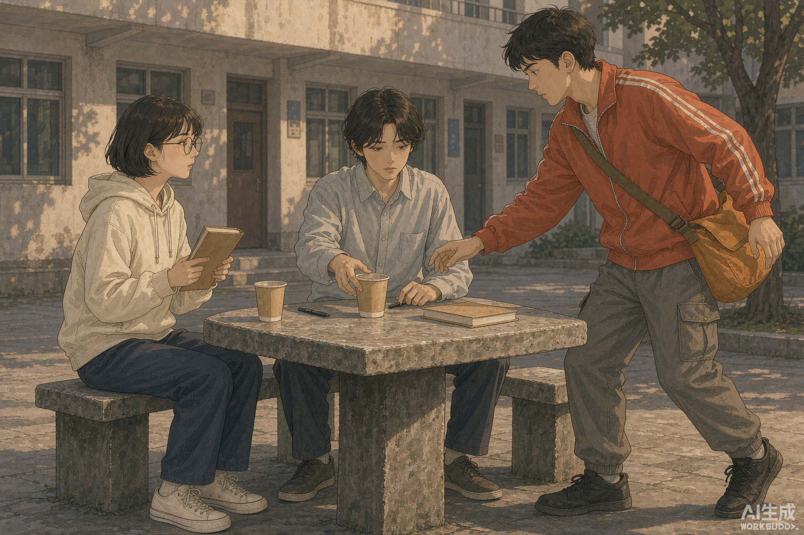
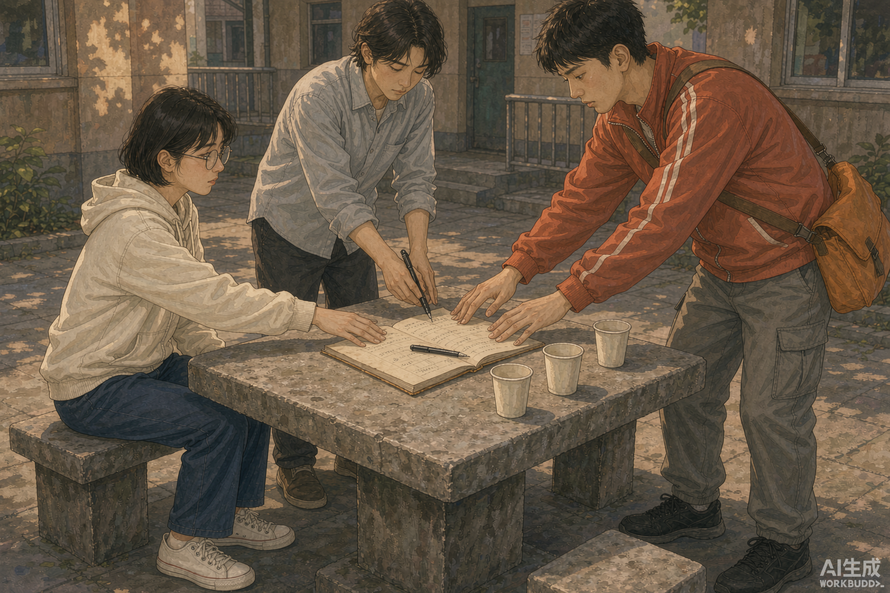

一、10 秒 AI 短剧成片
以制作包第 1 镜分镜图为首帧，按第 1—2 镜画面动作生成；含片头标识、SRT 字幕与钢琴风格背景音乐。
| 项目 | 规格 |
|---|---|
| 时长 | 10.00 秒 |
| 分辨率 / 画幅 | 1280 × 720 · 16:9 |
| 视频 / 音频 | H.264 · AAC 44.1 kHz 立体声 |
| 片段覆盖 | 第 1 镜（宿舍书桌）→ 第 2 镜（食堂窗口） |
| 字幕 | 0—5 秒「一周 只剩五十元」；5—10 秒「两份套餐 只能选一份」 |
| 背景音乐 | C—G—Am—F 和弦进行，ADSR 包络 + 谐波叠加模拟钢琴音色 |
二、8 张分镜图
与原制作包一致的 8 张 1536×1024 图；01 / 04 / 08 为页面规定的必做镜，其余为补齐镜。




三、页面规定的 9 个必需条目与附录
| 成果 | 文件 | 内容摘要 |
|---|---|---|
| 一句话梗概与选题说明 | 01_一句话梗概与选题说明.md | 3 条候选梗概、选定理由与 60 秒 / 8 镜规格声明 |
| 三幕八场剧本 | 02_剧本_五十元的一周.md | 8 场共 60 秒、7 句台词、E10 可视动作结局 |
| 人物设定卡 | 03_人物设定卡.csv | 3 行 × 11 列，含 visual_prompt 与负面词 |
| 分镜表 | 04_分镜表.csv | 表头 + 8 行 × 9 列，含 8 条可复现 image_prompt |
| 分镜图目录 | 05_分镜图/（8 张） | 8 张 1536×1024 图，01/04/08 为必做，其余为补齐 |
| 字幕文件 | 06_字幕.srt | 8 条 SRT，时间轴连续，末条结束 00:01:00,000 |
| 片头片尾文案 | 07_片头片尾文案.md | 含 AI 生成标识与素材来源声明 |
| 可播放分镜预览页 | 08_分镜预览.html | 单文件零依赖，片头→8 镜→片尾，字幕叠加 |
| 制作说明 | 09_制作说明.md | 能力清单、逐步产出、99/100 自评、C01—C08 合规 |
| 素材清单与假设说明 | 附录_素材清单_对应位置与假设说明.md | 12 份素材逐项对应位置 + A1—A12 假设 |
四、全文速览
以下为各成果文件的全文，便于不下载也能逐项对照规格。
一句话梗概与选题说明 · 01_一句话梗概与选题说明.md
# 01 · 一句话梗概与选题说明 ## 交付规格声明 | 项 | 规格 | 来源 | | --- | --- | --- | | 片名 | 《五十元的一周》 | 01_题材设定包.md | | 类型 | 校园财商微短剧（写实轻喜剧） | 01_题材设定包.md | | 片长 | 60 秒（8 镜合计 60 秒，在 55—65 秒允许区间内） | 01_题材设定包.md | | 结构 | 三幕 8 场，每场对应 1 个镜头：建置 2 场 / 对抗 4 场 / 解决 2 场 | 01_题材设定包.md | | 人物 | 3 人，不新增具名角色：林小满、周砚、陈屿 | 02_人物卡.csv | | 场景 | 仅限 S1—S6，8 场依次 S1 / S2 / S3 / S4 / S5 / S5 / S6 / S6 | 03_场景清单.csv | | 主题 | 预算约束下的选择——不是「省钱」，而是「把有限资源用在最在意的事上」 | 01_题材设定包.md | | 结局 | 可视动作：三人共同把记账本推向石桌中心、翻开下一页 | 04_原始事件素材.md · E10 | | 时间线 | 周一清晨 → 周一中午 → 周二下午 → 周三上午 → 周四傍晚 → 周五傍晚 | 01_题材设定包.md | | 梗概 | 1 条，40 字以内 | 页面「七、最终成品形式」 | ## 最终采用的一句话梗概 > **当林小满想要五十元撑一周时，却遇到替她做主的好意，最后因三人各省一笔而共翻账本。** 四要素核对：人物＝林小满；目标＝用五十元撑一周；阻碍＝替她做主的好意；反转＝三人各省一笔；结果＝共翻账本。全句 40 字（含标点）。 ## 三条候选一句话梗概（来自 04_原始事件素材.md） 格式：当【人物】想要【目标】时，却遇到【阻碍】，最后因【反转】而【结果】。每条 40 字以内。 | 候选 | 对应事件 | 一句话梗概 | 字数 | | --- | --- | --- | --- | | 候选一（选定） | E01 + E06 + E09 + E10 | 当林小满想要五十元撑一周时，却遇到替她做主的好意，最后因三人各省一笔而共翻账本。 | 40 | | 候选二 | E02 + E05 + E07 | 当林小满想按账本花钱时，却遇小票与海报对不上，最后因一次核对而看清钱去向。 | 37 | | 候选三 | E04 + E03 + E08 | 当林小满想留下报名表时，却遇到凑份子与预算撞车，最后因同伴让出一份而改了主意。 | 39 | ## 选择理由（80 字内） 选定候选一：冲突全在可视动作里——记账本、餐盘、纸杯、石桌；立场可由推让表达，无需说教；10 条事件可压进 8 镜，且 E10 是唯一推荐的结局动作。 ## 改编范围说明 为不遗漏 04_原始事件素材.md 中任何已提供素材，本作品把 E01—E10 全部落于 8 场（E02/E03、E08/E09 在同一场合并表达），仍保持三幕 8 场、8 镜与 60 秒，并以 E10 作为唯一结局。
三幕八场剧本 · 02_剧本_五十元的一周.md
# 02 · 剧本《五十元的一周》 > 三幕 8 场 · 60 秒 · 3 位人物 · 场景限 S1—S6 · 全部为课堂虚构内容。 > 台词每人每句不超过 12 字，全片 7 句（≤8 句）；无旁白、无说教；结局为可视动作。 ## 第一幕 · 建置（第 1—2 场） ### 第 01 场 · 镜 01 · 第一幕 · 建置 - **场景编号**：S1（03_场景清单.csv） - **时长**：7 秒 - **景别**：近景 - **出场人物**：林小满 - **画面动作**：林小满坐在宿舍书桌前翻开牛皮纸封面记账本，手指停在最后一格，眉头微蹙、嘴唇轻抿。 - **台词**：林小满：再算算 - **字幕**：一周 只剩五十元 - **情绪**：克制、迟疑 - **音效**：翻页声 - **可拍摄性说明**：桌面可见台灯、水杯与合放的笔记本，背景为简洁宿舍墙面与窗框；周一清晨窗外斜射自然光、暖白色调。 - **改编事件**：E01（04_原始事件素材.md） ### 第 02 场 · 镜 02 · 第一幕 · 建置 - **场景编号**：S2（03_场景清单.csv） - **时长**：8 秒 - **景别**：中景 - **出场人物**：林小满、周砚 - **画面动作**：食堂窗口前两位学生并肩看窗口，林小满一手抱牛皮纸封面记账本、一手指着两份餐盘，另一只手收在身前犹豫；周砚抬手想替她决定。 - **台词**：林小满：就一份 - **字幕**：两份套餐 只能选一份 - **情绪**：犹豫、被催促 - **音效**：餐盘碰撞声 - **可拍摄性说明**：窗口有餐盘、空白价签牌与纸巾，价签牌上无文字；周一中午顶部漫射光、暖黄色调。E03「生日凑份子超出当日预算」与 E02 在同一笔预算的二选一取舍中合并表达，由林小满收在身前犹豫的手与看过价签牌后移开的视线承担；不新增角色、道具或台词，与第 02 张生成图一致。 - **改编事件**：E02 / E03（04_原始事件素材.md） ## 第二幕 · 对抗（第 3—6 场） ### 第 03 场 · 镜 03 · 第二幕 · 对抗 - **场景编号**：S3（03_场景清单.csv） - **时长**：7 秒 - **景别**：全景 - **出场人物**：林小满、周砚、陈屿 - **画面动作**：校园林荫道长椅旁，周砚举着一张空白通知单、张嘴提议；林小满把牛皮纸封面记账本抱在胸前低头迟疑；陈屿站在稍远处低头看着地面。 - **台词**：周砚：二十 不贵 - **字幕**：报名表 二十元 - **情绪**：心动与顾虑并存 - **音效**：自行车铃声、落叶声 - **可拍摄性说明**：场景有长椅、落叶与靠在一旁的自行车；周二下午树叶斑驳光、浅绿与暖灰色调。 - **改编事件**：E04（04_原始事件素材.md） ### 第 04 场 · 镜 04 · 第二幕 · 对抗 - **场景编号**：S4（03_场景清单.csv） - **时长**：8 秒 - **景别**：中景 - **出场人物**：林小满、周砚、陈屿 - **画面动作**：三位学生站在公告栏前，陈屿低头看着手里的报名表，周砚抬手指向海报，林小满抱紧牛皮纸封面记账本、目光迟疑。 - **台词**：周砚：海报说 得买书 - **字幕**：一张海报 又一笔开支 - **情绪**：信息差带来的冲动 - **音效**：图钉按入软木声 - **可拍摄性说明**：栏板上有空白海报、图钉与通知单，均无文字；周三上午侧逆光、冷白色调。 - **改编事件**：E05（04_原始事件素材.md） ### 第 05 场 · 镜 05 · 第二幕 · 对抗 - **场景编号**：S5（03_场景清单.csv） - **时长**：8 秒 - **景别**：中景 - **出场人物**：林小满、周砚、陈屿 - **画面动作**：便利店玻璃门外，周砚两手各拎着纸杯、另一只纸杯夹在臂弯，笑着递向同伴；林小满抱着牛皮纸封面记账本、眼睛睁大略显意外；陈屿低头站在一旁。 - **台词**：周砚：包在我身上 - **字幕**：包在我身上 - **情绪**：好意与自主权的错位 - **音效**：纸杯轻碰声、塑料袋声 - **可拍摄性说明**：背景有玻璃门、购物篮与收银台轮廓；周四傍晚夕照低角度光、橙金色调。 - **改编事件**：E06（04_原始事件素材.md） ### 第 06 场 · 镜 06 · 第二幕 · 对抗 - **场景编号**：S5（03_场景清单.csv） - **时长**：7 秒 - **景别**：特写 - **出场人物**：林小满 - **画面动作**：桌面上一张空白收银小票挨着摊开的牛皮纸封面记账本，林小满一只手按住记账本、另一只手指尖停在小票边缘，眉头紧锁、嘴唇抿紧；画面以手部与小臂为主、脸部在画面上缘半入镜。 - **台词**：林小满：数对不上 - **字幕**：小票 对不上 - **情绪**：疑惑、反转铺垫 - **音效**：收银小票撕纸声 - **可拍摄性说明**：旁边有一只纸杯与玻璃门反光；周四傍晚夕照低角度光、橙金色调。 - **改编事件**：E07（04_原始事件素材.md） ## 第三幕 · 解决（第 7—8 场） ### 第 07 场 · 镜 07 · 第三幕 · 解决 - **场景编号**：S6（03_场景清单.csv） - **时长**：7 秒 - **景别**：中景 - **出场人物**：林小满、周砚、陈屿 - **画面动作**：宿舍楼下的石桌旁，陈屿安静地把自己面前的纸杯推向桌子中央，手边放着一支黑色细头笔；林小满与周砚同时看向他，周砚动作停在半途，桌上另有一本合着的牛皮纸封面记账本。 - **台词**：陈屿：都行 - **字幕**：都行 我的那份让出来 - **情绪**：沉默的善意、集体反转 - **音效**：纸杯推过石桌的摩擦声 - **可拍摄性说明**：周五傍晚柔和余光、暖灰色调，背景是宿舍楼墙面与树影。E09「三人各自悄悄省下一笔」由彼此相视的视线与同时停住的动作暗示，不出现具体金额与解释性台词；这一反转在第 8 场以共同翻开账本下一页的可视动作收束。 - **改编事件**：E08 / E09（04_原始事件素材.md） ### 第 08 场 · 镜 08 · 第三幕 · 解决 - **场景编号**：S6（03_场景清单.csv） - **时长**：8 秒 - **景别**：俯拍中景 - **出场人物**：林小满、周砚、陈屿 - **画面动作**：石桌中央摊开牛皮纸封面记账本，一支黑色细头笔放在账本上，旁边有三只纸杯；三只手同时从画面三侧伸向账本，共同把账本推向桌心，翻开下一页，动作温和而果断。全片结尾无台词、无旁白。 - **台词**：（无台词） - **字幕**：账本翻到下一页 - **情绪**：释然、共同承担 - **音效**：笔尖落在纸上的沙沙声 - **可拍摄性说明**：周五傍晚柔和余光、暖灰色调，背景是宿舍楼墙面与树影。结局为可视动作，不用台词或旁白点题。 - **改编事件**：E10（04_原始事件素材.md） ## 镜号—时长—场景汇总表 | 镜号 | 幕 | 时长秒 | 场景编号 | 地点 / 时间 | 改编事件 | | --- | --- | --- | --- | --- | --- | | 01 | 第一幕 · 建置 | 7 | S1 | 宿舍书桌前 / 周一清晨 | E01 | | 02 | 第一幕 · 建置 | 8 | S2 | 食堂窗口 / 周一中午 | E02 / E03 | | 03 | 第二幕 · 对抗 | 7 | S3 | 校园林荫道 / 周二下午 | E04 | | 04 | 第二幕 · 对抗 | 8 | S4 | 教学楼公告栏前 / 周三上午 | E05 | | 05 | 第二幕 · 对抗 | 8 | S5 | 便利店门口 / 周四傍晚 | E06 | | 06 | 第二幕 · 对抗 | 7 | S5 | 便利店门口 / 周四傍晚 | E07 | | 07 | 第三幕 · 解决 | 7 | S6 | 宿舍楼下的石桌 / 周五傍晚 | E08 / E09 | | 08 | 第三幕 · 解决 | 8 | S6 | 宿舍楼下的石桌 / 周五傍晚 | E10 | | **合计** | 三幕 8 场 | **60** | 全部来自 03_场景清单.csv | 周一至周五，无季节 / 天气跨镜矛盾 | E01—E10 | ## 结构自检 - 8 场齐全，三幕分配 2 / 4 / 2；8 场合计 60 秒，落在 60±5 秒区间。 - 场景编号 S1—S6 全部来自场景清单，未自造场景；时间线单调递增，无天气或季节矛盾。 - 人物仅林小满、周砚、陈屿 3 人，口头禅「再算算」「包在我身上」「都行」均取自人物卡。 - 道具「牛皮纸封面记账本」在第 1、2、3、4、5、6、7、8 场保持一致外观描述。 - 结局为三人共同把记账本推向桌心并翻开下一页的可视动作，全片无旁白、无点题台词。 - 台词共 7 句，每句均 ≤12 字；无真实姓名、校名、品牌、商标与价格数字以外的真实商业信息。
人物设定卡 · 03_人物设定卡.csv
姓名,年龄感,外貌,服装,性格,口头禅,随身道具,主色,visual_prompt,style_prefix,negative 林小满,20岁左右,齐耳短发 圆框眼镜 表情克制,米白色连帽卫衣 深蓝长裤 白色帆布鞋,谨慎 习惯记账,再算算,牛皮纸封面记账本,米白,20岁左右女生，齐耳短发，圆框眼镜，表情克制；米白色连帽卫衣、深蓝长裤、白色帆布鞋；手拿牛皮纸封面记账本；主色米白。,16:9 横幅构图，校园写实插画风，白天自然光，低饱和暖色调，中等景深，柔和镜头感，画面干净不出现任何文字与标识。,避免多余肢体、多余手指、面部变形、文字水印、品牌标识、商标、真实人脸、明星脸、二维码、真实商品包装、错别字、畸变手部。 周砚,20岁左右,短发 高个 动作幅度大,橙红色运动外套 灰色工装裤 黑色球鞋,冲动 热心 容易替别人做决定,包在我身上,橙色帆布挎包,橙红,20岁左右男生，短发、高个、动作幅度大；橙红色运动外套、灰色工装裤、黑色球鞋；斜挎橙色帆布挎包；主色橙红。,16:9 横幅构图，校园写实插画风，白天自然光，低饱和暖色调，中等景深，柔和镜头感，画面干净不出现任何文字与标识。,避免多余肢体、多余手指、面部变形、文字水印、品牌标识、商标、真实人脸、明星脸、二维码、真实商品包装、错别字、畸变手部。 陈屿,21岁左右,中长发 常低头,浅灰蓝色衬衫 深色长裤 布鞋,安静 观察力强 说话少,都行,一支黑色细头笔,灰蓝,21岁左右男生，中长发、常低头，安静；浅灰蓝色衬衫、深色长裤、布鞋；手持一支黑色细头笔；主色灰蓝。,16:9 横幅构图，校园写实插画风，白天自然光，低饱和暖色调，中等景深，柔和镜头感，画面干净不出现任何文字与标识。,避免多余肢体、多余手指、面部变形、文字水印、品牌标识、商标、真实人脸、明星脸、二维码、真实商品包装、错别字、畸变手部。
分镜表 · 04_分镜表.csv
镜号,时长秒,景别,画面描述,人物,台词,字幕,音效,image_prompt 01,7,近景,林小满坐在宿舍书桌前翻开牛皮纸封面记账本，手指停在最后一格，眉头微蹙、嘴唇轻抿。,林小满,林小满：再算算,一周 只剩五十元,翻页声,16:9 横幅构图，校园写实插画风，白天自然光，低饱和暖色调，中等景深，柔和镜头感，画面干净不出现任何文字与标识。20岁左右女生，齐耳短发，圆框眼镜，表情克制；米白色连帽卫衣、深蓝长裤、白色帆布鞋；手拿牛皮纸封面记账本；主色米白。近景，侧面四十五度平视镜头，女生坐在书桌前翻开牛皮纸封面记账本，手指停在最后一格，眉头微蹙、嘴唇轻抿，神情犹豫。宿舍书桌前，周一清晨，窗外斜射自然光，暖白色调，桌面有台灯、水杯与合放的笔记本，背景是简洁的宿舍墙面与窗框。避免多余肢体、多余手指、面部变形、文字水印、品牌标识、商标、真实人脸、明星脸、二维码、真实商品包装、错别字、畸变手部。 02,8,中景,食堂窗口前两位学生并肩看窗口，林小满一手抱牛皮纸封面记账本、一手指着两份餐盘，另一只手收在身前犹豫；周砚抬手想替她决定。,林小满、周砚,林小满：就一份,两份套餐 只能选一份,餐盘碰撞声,16:9 横幅构图，校园写实插画风，白天自然光，低饱和暖色调，中等景深，柔和镜头感，画面干净不出现任何文字与标识。20岁左右女生，齐耳短发，圆框眼镜，表情克制；米白色连帽卫衣、深蓝长裤、白色帆布鞋；手拿牛皮纸封面记账本；主色米白。20岁左右男生，短发、高个、动作幅度大；橙红色运动外套、灰色工装裤、黑色球鞋；斜挎橙色帆布挎包；主色橙红。中景，平视镜头，食堂窗口前两位学生并肩看窗口，女生一手抱牛皮纸封面记账本、一手指着两份餐盘，另一只手收在身前犹豫；短发男生抬手想替她决定，动作幅度大。周一中午，食堂窗口，顶部漫射光，暖黄色调，窗口有餐盘、空白价签牌与纸巾，价签牌上无文字。避免多余肢体、多余手指、面部变形、文字水印、品牌标识、商标、真实人脸、明星脸、二维码、真实商品包装、错别字、畸变手部。 03,7,全景,校园林荫道长椅旁，周砚举着一张空白通知单、张嘴提议；林小满把牛皮纸封面记账本抱在胸前低头迟疑；陈屿站在稍远处低头看着地面。,林小满、周砚、陈屿,周砚：二十 不贵,报名表 二十元,自行车铃声、落叶声,16:9 横幅构图，校园写实插画风，白天自然光，低饱和暖色调，中等景深，柔和镜头感，画面干净不出现任何文字与标识。20岁左右女生，齐耳短发，圆框眼镜，表情克制；米白色连帽卫衣、深蓝长裤、白色帆布鞋；手拿牛皮纸封面记账本；主色米白。20岁左右男生，短发、高个、动作幅度大；橙红色运动外套、灰色工装裤、黑色球鞋；斜挎橙色帆布挎包；主色橙红。21岁左右男生，中长发、常低头，安静；浅灰蓝色衬衫、深色长裤、布鞋；手持一支黑色细头笔；主色灰蓝。全景，平视镜头，校园林荫道长椅旁，短发男生举着一张空白通知单、张嘴提议，齐耳短发女生把牛皮纸封面记账本抱在胸前、低头迟疑，中长发男生站在稍远处低头看着地面。周二下午，树叶斑驳光，浅绿与暖灰色调，场景有长椅、落叶与靠在一旁的自行车。避免多余肢体、多余手指、面部变形、文字水印、品牌标识、商标、真实人脸、明星脸、二维码、真实商品包装、错别字、畸变手部。 04,8,中景,三位学生站在公告栏前，陈屿低头看着手里的报名表，周砚抬手指向海报，林小满抱紧牛皮纸封面记账本、目光迟疑。,林小满、周砚、陈屿,周砚：海报说 得买书,一张海报 又一笔开支,图钉按入软木声,16:9 横幅构图，校园写实插画风，白天自然光，低饱和暖色调，中等景深，柔和镜头感，画面干净不出现任何文字与标识。20岁左右女生，齐耳短发，圆框眼镜，表情克制；米白色连帽卫衣、深蓝长裤、白色帆布鞋；手拿牛皮纸封面记账本；主色米白。20岁左右男生，短发、高个、动作幅度大；橙红色运动外套、灰色工装裤、黑色球鞋；斜挎橙色帆布挎包；主色橙红。21岁左右男生，中长发、常低头，安静；浅灰蓝色衬衫、深色长裤、布鞋；手持一支黑色细头笔；主色灰蓝。中景，略微仰拍的平视镜头，三位学生站在公告栏前，中长发男生低头看着手里的报名表，短发男生抬手指向海报，齐耳短发女生抱紧记账本、目光迟疑。教学楼公告栏前，周三上午，侧逆光，冷白色调，栏板上有空白海报、图钉与通知单，均无文字。避免多余肢体、多余手指、面部变形、文字水印、品牌标识、商标、真实人脸、明星脸、二维码、真实商品包装、错别字、畸变手部。 05,8,中景,便利店玻璃门外，周砚两手各拎着纸杯、另一只纸杯夹在臂弯，笑着递向同伴；林小满抱着牛皮纸封面记账本、眼睛睁大略显意外；陈屿低头站在一旁。,林小满、周砚、陈屿,周砚：包在我身上,包在我身上,纸杯轻碰声、塑料袋声,16:9 横幅构图，校园写实插画风，白天自然光，低饱和暖色调，中等景深，柔和镜头感，画面干净不出现任何文字与标识。20岁左右女生，齐耳短发，圆框眼镜，表情克制；米白色连帽卫衣、深蓝长裤、白色帆布鞋；手拿牛皮纸封面记账本；主色米白。20岁左右男生，短发、高个、动作幅度大；橙红色运动外套、灰色工装裤、黑色球鞋；斜挎橙色帆布挎包；主色橙红。21岁左右男生，中长发、常低头，安静；浅灰蓝色衬衫、深色长裤、布鞋；手持一支黑色细头笔；主色灰蓝。中景，平视镜头，便利店玻璃门外，短发男生两手各拎着纸杯、另一只纸杯夹在臂弯，笑着递向同伴；齐耳短发女生抱着牛皮纸封面记账本、眼睛睁大略显意外；中长发男生低头站在一旁。周四傍晚，夕照低角度光，橙金色调，背景有玻璃门、购物篮与收银台轮廓。避免多余肢体、多余手指、面部变形、文字水印、品牌标识、商标、真实人脸、明星脸、二维码、真实商品包装、错别字、畸变手部。 06,7,特写,桌面上一张空白收银小票挨着摊开的牛皮纸封面记账本，林小满一只手按住记账本、另一只手指尖停在小票边缘，眉头紧锁、嘴唇抿紧；画面以手部与小臂为主、脸部在画面上缘半入镜。,林小满,林小满：数对不上,小票 对不上,收银小票撕纸声,16:9 横幅构图，校园写实插画风，白天自然光，低饱和暖色调，中等景深，柔和镜头感，画面干净不出现任何文字与标识。20岁左右女生，齐耳短发，圆框眼镜，表情克制；米白色连帽卫衣、深蓝长裤、白色帆布鞋；手拿牛皮纸封面记账本；主色米白。特写，四十五度俯视镜头，桌面上一张空白收银小票挨着摊开的牛皮纸封面记账本，女生一只手按住记账本、另一只手指尖停在小票边缘，眉头紧锁、嘴唇抿紧，神情疑惑，画面只拍到手部与小臂为主、脸部在画面上缘半入镜。周四傍晚，便利店门口，夕照低角度光，橙金色调，旁边有一只纸杯与玻璃门反光。避免多余肢体、多余手指、面部变形、文字水印、品牌标识、商标、真实人脸、明星脸、二维码、真实商品包装、错别字、畸变手部。 07,7,中景,宿舍楼下的石桌旁，陈屿安静地把自己面前的纸杯推向桌子中央，手边放着一支黑色细头笔；林小满与周砚同时看向他，周砚动作停在半途，桌上另有一本合着的牛皮纸封面记账本。,林小满、周砚、陈屿,陈屿：都行,都行 我的那份让出来,纸杯推过石桌的摩擦声,16:9 横幅构图，校园写实插画风，白天自然光，低饱和暖色调，中等景深，柔和镜头感，画面干净不出现任何文字与标识。20岁左右女生，齐耳短发，圆框眼镜，表情克制；米白色连帽卫衣、深蓝长裤、白色帆布鞋；手拿牛皮纸封面记账本；主色米白。20岁左右男生，短发、高个、动作幅度大；橙红色运动外套、灰色工装裤、黑色球鞋；斜挎橙色帆布挎包；主色橙红。21岁左右男生，中长发、常低头，安静；浅灰蓝色衬衫、深色长裤、布鞋；手持一支黑色细头笔；主色灰蓝。中景，平视镜头，宿舍楼下的石桌旁，中长发男生安静地把自己面前的纸杯推向桌子中央，手边放着一支黑色细头笔；齐耳短发女生与短发男生同时看向他，短发男生动作停在半途，桌上另有一本合着的牛皮纸封面记账本。周五傍晚，柔和余光，暖灰色调，背景是宿舍楼墙面与树影。避免多余肢体、多余手指、面部变形、文字水印、品牌标识、商标、真实人脸、明星脸、二维码、真实商品包装、错别字、畸变手部。 08,8,俯拍中景,石桌中央摊开牛皮纸封面记账本，一支黑色细头笔放在账本上，旁边有三只纸杯；三只手同时从画面三侧伸向账本，共同把账本推向桌心，翻开下一页，动作温和而果断。全片结尾无台词、无旁白。,林小满、周砚、陈屿,（无台词）,账本翻到下一页,笔尖落在纸上的沙沙声,16:9 横幅构图，校园写实插画风，白天自然光，低饱和暖色调，中等景深，柔和镜头感，画面干净不出现任何文字与标识。20岁左右女生，齐耳短发，圆框眼镜，表情克制；米白色连帽卫衣、深蓝长裤、白色帆布鞋；主色米白。20岁左右男生，短发、高个、动作幅度大；橙红色运动外套、灰色工装裤、黑色球鞋；斜挎橙色帆布挎包；主色橙红。21岁左右男生，中长发、常低头，安静；浅灰蓝色衬衫、深色长裤、布鞋；手持一支黑色细头笔；主色灰蓝。俯拍中景，四十五度俯视镜头，宿舍楼下的石桌中央摊开一本牛皮纸封面记账本，一支黑色细头笔放在账本上，旁边有三只纸杯，三只手同时从画面三侧伸向账本，共同把账本推向桌心，动作温和而果断。周五傍晚，柔和余光，暖灰色调，背景是宿舍楼墙面与树影。避免多余肢体、多余手指、面部变形、文字水印、品牌标识、商标、真实人脸、明星脸、二维码、真实商品包装、错别字、畸变手部。
字幕文件 · 06_字幕.srt
1 00:00:00,000 --> 00:00:07,000 一周 只剩五十元 2 00:00:07,000 --> 00:00:15,000 两份套餐 只能选一份 3 00:00:15,000 --> 00:00:22,000 报名表 二十元 4 00:00:22,000 --> 00:00:30,000 一张海报 又一笔开支 5 00:00:30,000 --> 00:00:38,000 包在我身上 6 00:00:38,000 --> 00:00:45,000 小票 对不上 7 00:00:45,000 --> 00:00:52,000 都行 我的那份让出来 8 00:00:52,000 --> 00:01:00,000 账本翻到下一页
片头片尾文案 · 07_片头片尾文案.md
# 07 · 片头片尾文案 > 依据 08_片头片尾文案.md 模板填写；片头 3 秒、片尾 5 秒，均在 08_分镜预览.html 中可见。 ## 片头（3 秒） - 主标题：五十元的一周 - 副标题：校园财商微短剧 · 60 秒 - 合规标识（必须保留）：**本片画面由 AI 生成 · 课堂练习作品** - 画面建议：记账本封面特写，缓慢推近，暖白自然光。 - 预览页呈现：深色底居中显示主标题、副标题与合规标识；3 秒后自动进入第 1 镜。 ## 片尾（5 秒） - 主题一句（写物件状态，不说教）：**账本翻到下一页** - 素材来源声明：本片人物、场景、事件与台词均为课堂虚构素材，不含真实个人信息与品牌。 - 制作信息：课程《最热AI应用实践课》第 1 课 · 制作工具 WorkBuddy · 制作日期 2026-11-07 - 画面建议：三人把记账本推到石桌中间的静帧，与结局镜头呼应。 - 预览页呈现：第 8 镜结束后显示主题句、素材来源声明与制作信息；5 秒后停片。 ## 合规标识检查（对应 10_合规与授权清单.md） | 检查项 | 结果 | 证据 | | --- | --- | --- | | 片头含「AI 生成」与「课堂练习作品」字样 | 通过 | 本文件片头段；08_分镜预览.html 片头屏 | | 片尾含素材来源声明 | 通过 | 本文件片尾段；08_分镜预览.html 片尾屏 | | 全片无真实校名、人名、品牌、商标、二维码 | 通过 | 02_剧本_五十元的一周.md；8 条 image_prompt 负面词 | | 全片无真人肖像、无撞脸明星形象 | 通过 | 03_人物设定卡.csv negative 列；05_分镜图/ | > 制作日期按假设 A8 填写为 2026-11-07；学生提交时应改为本人制作日期。
制作说明 · 09_制作说明.md
# 09 · 制作说明 > 作品：《五十元的一周》 · 课程《最热AI应用实践课》第 1 课 · 90 分钟单人独立完成 > 本说明按页面步骤 9 提示词生成；所有条目均为本次实际产出，不含未运行或未生成的内容。 ## 一、使用的工具与能力编号清单 | 能力编号 | 能力名称 | 本次实际用途 | | --- | --- | --- | | WB-CHAT | 对话与长文写作 | 三条候选梗概、三幕 8 场剧本、片头片尾主题句 | | WB-FILE | 本地文件读写 | 9 个成果文件与附录的落盘；12 份素材读取；CSV / SRT 生成 | | WB-IMAGE | 图像生成（文生图） | 8 张分镜图实际生成，size=1536x1024、quality=medium | | WB-HTML | 网页与应用构建、预览 | 08_分镜预览.html 单文件零依赖预览页 | | WB-CMD | 命令执行与数据处理 | 素材线上/本地一致性核验、图片尺寸核验、文件树核对、ZIP 打包与校验 | | WB-VIDEO | 视频生成 | **未启用**，见第五节 | ## 二、逐步产出（对应页面 10 个步骤与 10 条内嵌提示词） | 步骤 | 名称 | 实际产出 | 能力 | 自检结果 | | --- | --- | --- | --- | --- | | 1 | 环境准备与素材核对 | 12 份素材核对表（见附录）；第1课_短剧制作包/ 目录 | WB-FILE | 12 行全部存在，线上与本地逐字节一致 | | 2 | 选题与一句话梗概 | 01_一句话梗概与选题说明.md | WB-CHAT | 3 条候选、四要素齐全、事件来自原始素材 | | 3 | 写三幕八场剧本 | 02_剧本_五十元的一周.md | WB-CHAT | 8 场齐全、场景来自清单、合计 60 秒、结局为可视动作 | | 4 | 固化人物视觉设定卡 | 03_人物设定卡.csv | WB-FILE | 3 行 × 11 列；锚点可独立使用、无指代词；负面词 12 项 | | 5 | 填 8 镜分镜表 | 04_分镜表.csv | WB-FILE | 表头 1 行 + 8 行 × 9 列；image_prompt 284—401 字、无指代词 | | 6 | 生成分镜图 | 05_分镜图/01.png—08.png（8 张） | WB-IMAGE | 必做 01/04/08 齐备并补齐 02—07；8 张尺寸一致 | | 7 | 字幕、旁白与片头片尾 | 06_字幕.srt、07_片头片尾文案.md | WB-FILE | SRT 8 条、连续不重叠、末条结束 = 60 秒 | | 8 | 集成可播放预览页 | 08_分镜预览.html | WB-HTML | 片头→8 镜→片尾、字幕叠加、4 按钮、缺图占位、零依赖 | | 9 | 自检与合规核对 | 09_制作说明.md | WB-CMD | 6 项自评 100 分制；C01—C08 逐条核对 | | 10 | 打包提交 | 第1课_短剧制作包_学号姓名.zip | WB-CMD | ZIP 内相对路径、9 个必需条目、预览页图片路径全部命中 | ### 页面内嵌提示词取用记录 | 提示词 | 步骤 | 对应成果 | | --- | --- | --- | | P1 / 步骤 1 | 环境准备与素材核对 | 12 份素材核对表 → 附录_素材清单_对应位置与假设说明.md；第1课_短剧制作包/ 目录已建立 | | P2 / 步骤 2 | 选题与一句话梗概 | 01_一句话梗概与选题说明.md | | P3 / 步骤 3 | 写三幕八场剧本 | 02_剧本_五十元的一周.md | | P4 / 步骤 4 | 固化人物视觉设定卡 | 03_人物设定卡.csv | | P5 / 步骤 5 | 填 8 镜分镜表 | 04_分镜表.csv | | P6 / 步骤 6 | 生成分镜图 | 05_分镜图/01.png—08.png（8 张全部生成） | | P7 / 步骤 7 | 字幕、旁白与片头片尾 | 06_字幕.srt、07_片头片尾文案.md | | P8 / 步骤 8 | 集成可播放的分镜预览页 | 08_分镜预览.html | | P9 / 步骤 9 | 自检与合规核对 | 09_制作说明.md（自评得分表 + C01—C08 合规核对） | | P10 / 步骤 10 | 打包提交 | 第1课_短剧制作包_学号姓名.zip（含文件树核对表与 ZIP 校验结果，见 09_制作说明.md） | ## 三、分镜图数量与生成方式 - 数量：**8 张**（页面必做 3 张 01 / 04 / 08 已齐全，并补齐 02、03、05、06、07）。 - 方式：WorkBuddy 图像生成能力（WB-IMAGE）按 04_分镜表.csv 的 image_prompt 列逐条文生图，size=1536x1024、quality=medium、全片共用同一画风前缀与负面词。 - 8 条 image_prompt 与 8 次图像生成的真实输入**逐字一致**，可据此复现；每条 284—401 字，均 ≥90 字、无「如上 / 同上 / 参见前镜」等指代词。 - 人物一致性：三位人物的视觉锚点原文在每张图中逐字前置，主色米白 / 橙红 / 灰蓝跨 8 图未改变；抽样核对第 01、04、08 张的发型、眼镜、卫衣、挎包、衬衫与记账本一致。 - 画风一致性：与素材 示例_分镜图_01.png 的 16:9 校园写实插画风、白天自然光、低饱和暖色调口径一致；该示例图**仅作风格对照，未复制、未改名、未作为本人成果提交**（C06）。 - 画幅说明：原始 PNG 按页面步骤 6 指令统一为 1536×1024；预览页以 16:9 容器 object-fit:cover 统一呈现，原图未经裁切、遮罩或二次导出。见假设 A4。 ## 四、AI 生成内容标识说明 - 片头标注「本片画面由 AI 生成 · 课堂练习作品」，片尾标注素材来源声明；二者在 07_片头片尾文案.md 与 08_分镜预览.html 中均可见（C04 / C05）。 - 8 张生成图右下角含图像生成平台自动附加的「AI生成 WORKBUDDY」角标。该角标属工具侧 AI 生成内容标识，不是作品内添加的剧情文字、品牌或商标；本次**原样保留、未做抹除或二次合成**，并在假设 A7 中如实说明。 - 画面内未添加任何剧名以外的文字、品牌、商标、二维码或真实商品包装；价签牌、海报、通知单、小票在图像提示词中均明确写为空白。 ## 五、未启用能力及替代路径（如实标注） | 能力 / 环节 | 说明 | 状态 | 依据与替代路径 | | --- | --- | --- | --- | | WB-VIDEO | 视频生成 / 分镜图合成 MP4 | **未启用** | 页面将 10_成片.mp4 列为可选加分项，不做不影响通过验收；本作品以「分镜图 + 字幕 + 可播放预览页」为主交付物，未生成任何视频文件。 | | 图生图 / 角色一致性重生成 | 以第 1 镜人物为参照的重生成 | **未启用** | 8 张图一次性生成后核对人物发型、服装与主色一致，未触发页面「不一致时重生成」的分支，故未实际调用。 | | WB-WEB / 外部平台发布 | 对外发布与平台备案 | **未启用** | 合规 C08 要求不把课堂作品对外发布到公开平台；本作品仅在本地课程工作目录交付，无外链、无发布记录。 | | Trae / DeepSeek 同口径对照 | 第三方工具输出差异比对 | **未启用** | 页面明确其为「可选对照、不计入验收」，本作品全程以 WorkBuddy 为唯一必需工具完成。 | | 替代路径（文字分镜示意卡） | 图像生成不可用时的 HTML/CSS 示意卡 | **未启用** | WB-IMAGE 图像生成能力实际可用并已产出 8 张 PNG，故未启用替代路径；05_分镜图/ 内全部为真实生成图。 | > 未启用能力合计 5 项，均标注为「未启用」。本作品未把任何演示、草案或替代路径写成已上线运行的结果。 ## 六、素材来源声明 - 人物、场景、事件、台词全部来自本课 12 份随课素材（01_题材设定包.md、02_人物卡.csv、03_场景清单.csv、04_原始事件素材.md、05_分镜表模板.csv、06_提示词库.md、07_字幕模板.srt、08_片头片尾文案.md、09_验收量表.csv、10_合规与授权清单.md、示例_分镜图_01.png、README.md），均为**课堂虚构数据**。 - 素材获取：页面第 3 节逐份链接与 素材包 ZIP 下载后，与本地 site/hot/materials/ 对应文件做了逐字节一致性核验；逐份素材在成品中的对应位置见 附录_素材清单_对应位置与假设说明.md。 - 不含真实姓名、学号、校名、品牌、商标、二维码、真实商品包装，不含真实人物肖像。 - 提交包内不复制原始素材文件（页面步骤 10 规定「不打包素材原始包」），示例图按 C06 不进入提交包；素材内容已全部并入 9 个成果文件。 ## 七、自评得分表（按 09_验收量表.csv，100 分制） | 评价项目 | 满分 | 自评得分 | 证据文件路径 | 扣分原因 | | --- | --- | --- | --- | --- | | 剧本完整性与主题表达 | 20 | 20 | 02_剧本_五十元的一周.md | 无：三幕 8 场齐全、场景来自清单、合计 60 秒、结局为可视动作 | | 人物与分镜一致性 | 20 | 20 | 03_人物设定卡.csv、04_分镜表.csv | 无：3 人锚点可独立使用、8 镜无缺项、image_prompt 均 ≥90 字无指代词、跨镜主色一致 | | 分镜图质量与数量 | 20 | 19 | 05_分镜图/01.png—08.png、08_分镜预览.html | 自扣 1 分：原始 PNG 按页面步骤 6 为 1536×1024（3:2），16:9 画幅由预览页容器实现，未另行导出 16:9 原图（见假设 A4） | | 字幕与文案 | 15 | 15 | 06_字幕.srt、07_片头片尾文案.md | 无：SRT 8 条连续、字幕 ≤15 字、片头含 AI 标识、片尾含素材声明 | | 分镜预览页可运行 | 15 | 15 | 08_分镜预览.html | 无：可播放、字幕随镜切换、4 个按钮与键盘可用、缺图有占位卡 | | 制作说明与合规 | 10 | 10 | 09_制作说明.md | 无：逐步产出与能力编号齐全、未启用能力如实标注、合规清单逐条核对 | | **合计** | **100** | **99** | — | — | > 自评为作品提交方按公开量规的逐项自检结果，最终得分以教师评阅为准。 ## 八、C01—C08 合规逐条核对（依据 10_合规与授权清单.md） | 编号 | 检查项 | 结果 | 核对依据 | | --- | --- | --- | --- | | C01 | 人物/场景/事件/台词均来自课堂虚构素材 | 通过 | 8 场场景 S1—S6 与事件 E01—E10 全部可回溯至随课素材；无真实姓名、学号、校名 | | C02 | 未使用真实人物肖像 | 通过 | 3 人均为插画风虚构形象；负面词含「真实人脸、明星脸」 | | C03 | 未出现品牌、商标、二维码、真实商品包装 | 通过 | 8 条 image_prompt 明确价签牌 / 海报 / 通知单 / 小票为空白；平台自动 AI 标识见第四节与假设 A7，非剧情内品牌 | | C04 | 片头标注「AI 生成 · 课堂练习作品」 | 通过 | 07_片头片尾文案.md 与预览页片头屏 | | C05 | 片尾标注素材来源 | 通过 | 07_片头片尾文案.md 与预览页片尾屏 | | C06 | 示例分镜图未被当作本人成果提交 | 通过 | 提交包内无 示例_分镜图_01.png；8 张图均为本次实际生成 | | C07 | 未启用能力如实标注 | 通过 | 本文件第五节 5 项均标注「未启用」 | | C08 | 未把课堂作品发布到公开平台 | 通过 | 仅本地课程工作目录交付，无外链、无发布记录 | ## 九、遇到的问题与解决方式 | 问题 | 处理方式 | | --- | --- | | 页面成果目录命名出现两种写法 | 采用步骤 1—10 与提交清单一致、且与 ZIP 名对应的「第1课_短剧制作包/」，在假设 A1 标注 | | 模板为 9 列、步骤 5 自检点写「8 列」 | 按模板 9 列执行并在假设 A3 标注 | | 8 镜合计 60 秒，末条 SRT 结束时间超出 00:00:SS 形式 | 按标准 SRT 写作 00:01:00,000，见假设 A5 | | 生成图右下角有平台自动 AI 标识，与提示词负面词「文字水印」冲突 | 判定为工具侧合规标识而非作品内文字，原样保留并如实记录，不抹除、不虚构；见假设 A7 与第四节 | | 页面指定 1536×1024 但量规要求 16:9 | 原图按页面指令保留，预览页以 16:9 容器统一呈现；自评在「分镜图质量与数量」自扣 1 分，见假设 A4 | | 素材要求「不遗漏」与页面「不打包素材原始包」并存 | 12 份素材全部作为输入使用并逐项标注对应位置，提交包内不复制原始文件，见假设 A12 | ## 十、复现步骤摘要 1. 从页面第 3 节下载 12 份随课素材，放入工作目录并核对齐全。 2. 按 01 → 02 → 03 → 04 顺序生成梗概、剧本、人物设定卡与 8 镜分镜表；分镜表列沿用 05_分镜表模板.csv。 3. 对 04_分镜表.csv 的每条 image_prompt 调用图像生成（1536x1024 / medium），保存为 05_分镜图/01.png—08.png。 4. 由时长列用脚本累加生成 06_字幕.srt（8 条、末条结束 = 60 秒），按 08_片头片尾文案.md 填写 07_片头片尾文案.md。 5. 生成 08_分镜预览.html，内嵌分镜数据、零外部依赖，图片使用相对路径 05_分镜图/xx.png。 6. 按 09_验收量表.csv 与 10_合规与授权清单.md 自检，生成本说明与附录，打包为 第1课_短剧制作包_学号姓名.zip 并校验解压后路径有效。 ## 十一、成果目录文件树核对表（页面步骤 10 要求） | 相对路径 | 字节 | 是否必需 | | --- | --- | --- | | 01_一句话梗概与选题说明.md | 2760 | 必需 | | 02_剧本_五十元的一周.md | 8502 | 必需 | | 03_人物设定卡.csv | 2094 | 必需 | | 04_分镜表.csv | 11045 | 必需 | | 06_字幕.srt | 448 | 必需 | | 07_片头片尾文案.md | 1750 | 必需 | | 08_分镜预览.html | 13176 | 必需 | | 05_分镜图/ | （目录） | 必需 | | 05_分镜图/01.png | 2304416 | 必需（05_分镜图/ 内文件） | | 05_分镜图/02.png | 2665598 | 必需（05_分镜图/ 内文件） | | 05_分镜图/03.png | 2742079 | 必需（05_分镜图/ 内文件） | | 05_分镜图/04.png | 2636120 | 必需（05_分镜图/ 内文件） | | 05_分镜图/05.png | 2566126 | 必需（05_分镜图/ 内文件） | | 05_分镜图/06.png | 2354869 | 必需（05_分镜图/ 内文件） | | 05_分镜图/07.png | 2494146 | 必需（05_分镜图/ 内文件） | | 05_分镜图/08.png | 2538187 | 必需（05_分镜图/ 内文件） | | 09_制作说明.md | （本文件） | 必需 | | 附录_素材清单_对应位置与假设说明.md | 16605 | 交付说明（非必需） | - 9 个必需条目（01—09）全部存在；05_分镜图/ 含 8 个 PNG（≥3 个要求）。 - 附录_素材清单_对应位置与假设说明.md 为交付说明，不占用 01—09 与可选 10 的编号空间（假设 A9）。 - 可选 10_成片.mp4 未制作（WB-VIDEO 未启用，页面说明不影响通过验收）。 - 原始生成图归档在 hotcourse-build/_gen_work/（工作过程，不进入提交包）；示例_分镜图_01.png 按 C06 不进入提交包。
素材清单与假设说明 · 附录_素材清单_对应位置与假设说明.md
# 附录 · 素材清单、成品对应位置与假设说明 > 交付说明文件。对应页面 lesson1.html「第 1 课 · AI 短剧一站式制作」。 > 本文件逐项列明全部可获取素材的使用方式与在成品中的对应位置，并标注页面未明确处所采用的假设。 ## 一、真值来源与素材获取 | 项 | 内容 | | --- | --- | | 页面（线上） | https://aheelv.github.io/maxhub/hot/lesson1.html | | 页面（本地） | site/hot/lesson1.html | | 逐份素材 | 页面第 3 节 12 个链接，及「⬇ 下载本课素材包」指向的 最热AI应用实践课_第1课_AI短剧一站式制作_素材包.zip | | 页面内嵌资源 | 10 个可整段复制提示词块（P1—P10，对应步骤 1—10） | | 核验 | 线上 12 份素材与本地 site/hot/materials/ 对应文件逐字节一致；素材包 ZIP 内 13 个条目，可正常解压 | | 素材副本 | hotcourse-build/_fetched_lesson1/（工作副本，不进入提交包） | ## 二、12 份素材 + 1 个整包链接资源逐项对应位置 | # | 文件名 | 用途 | 在成品中的对应位置 | 是否进入提交包 | 说明 | | --- | --- | --- | --- | --- | --- | | 1 | 01_题材设定包.md | 题材、主题、冲突、时长与集数设定 | 01_一句话梗概与选题说明.md（60 秒 / 三幕 8 场 / 3 人 / 场景限 S1—S6 / 可视动作结局 / 周一至周五时间线 / 不许说教）；02_剧本_五十元的一周.md（三幕骨架、每人每句 ≤12 字、全片 ≤8 句）；09_制作说明.md | 否（作为输入，不复制原始素材进提交包） | 主题「预算约束下的选择」与结局禁令逐条落实；未改为「省钱」说教。 | | 2 | 02_人物卡.csv | 3 位人物的外貌、服装、性格、口头禅与视觉负面词 | 03_人物设定卡.csv（原 8 列逐字保留 + visual_prompt / style_prefix / negative 三列，共 3 行）；02_剧本_五十元的一周.md（口头禅「再算算」「包在我身上」「都行」）；04_分镜表.csv（人物列）；05_分镜图/01.png—08.png（视觉锚点） | 否（原表值已并入 03_人物设定卡.csv） | 三人主色米白 / 橙红 / 灰蓝在 8 张图中均未改变。 | | 3 | 03_场景清单.csv | 6 个校园场景的时间、光线、色调与道具 | 02_剧本_五十元的一周.md（每场场景编号 / 时间 / 光线 / 色调）；04_分镜表.csv（画面描述列）；05_分镜图/（8 条 image_prompt 的场景环境段） | 否（场景值已写入成果） | 8 场场景编号为 S1,S2,S3,S4,S5,S5,S6,S6，全部来自清单，无自造场景。 | | 4 | 04_原始事件素材.md | 10 条课堂虚构校园消费冲突事件 | 02_剧本_五十元的一周.md（8 场逐场映射 E01—E10）；01_一句话梗概与选题说明.md（3 条候选梗概与选定理由） | 否（事件内容已改编进剧本） | E01—E10 全部落地，E02/E03、E04、E05、E06、E07、E08/E09、E10 分别对应 8 场；E10 为唯一结局动作。 | | 5 | 05_分镜表模板.csv | 8 镜分镜表的列定义与 1 行示范 | 04_分镜表.csv（9 列表头逐字沿用；示范行「手指停在最后一格」「再算算」「一周 只剩五十元」「翻页声」逐字沿用为第 1 镜） | 否（模板列已沿用） | 模板为 9 列，页面步骤 5 自检点「8 行 × 8 列」按模板 9 列执行，见假设 A3。 | | 6 | 06_提示词库.md | P1—P9 八类可整段复制提示词 | 09_制作说明.md「页面内嵌提示词取用记录」；对应 01—09 号全部成果文件与 8 张分镜图 | 否（已按 P1—P9 逐步取用） | P1 素材核对 / P2 梗概 / P3 剧本 / P4 锚点 / P5 分镜表 / P6 图像 / P7 字幕 / P8 预览页 / P9 自检打包，逐条有产出。 | | 7 | 07_字幕模板.srt | SRT 字幕格式样板与时间轴书写规则 | 06_字幕.srt（序号 / 起止时间 / 字幕文字 / 空行；8 条；连续不重叠；末条结束 = 60 秒；每条 ≤15 字）；第 1 条时间与文字「00:00:00,000 --> 00:00:07,000」「一周 只剩五十元」逐字沿用 | 否（格式已沿用） | 第 8 条结束时间按标准 SRT 写作 00:01:00,000，见假设 A5。 | | 8 | 08_片头片尾文案.md | 片头 3 秒、片尾 5 秒文案与合规标识位 | 07_片头片尾文案.md（主标题、副标题、合规标识、主题句、素材来源声明、制作信息、合规标识检查表）；08_分镜预览.html 片头屏与片尾屏 | 否（文案已填入成品） | 片头含「AI 生成」与「课堂练习作品」，片尾含素材来源声明，满足 C04 / C05。 | | 9 | 09_验收量表.csv | 100 分验收量规机器可读版 | 09_制作说明.md「自评得分表（6 项 / 100 分）」；09_制作说明.md「C01—C08 合规逐条核对」 | 否（量规已用于自评） | 6 个评价项目、满分 20/20/20/15/15/10 与量规逐字一致。 | | 10 | 10_合规与授权清单.md | 肖像、版权、AI 标识与素材来源逐项检查清单 | 09_制作说明.md「C01—C08 合规逐条核对」；07_片头片尾文案.md「合规标识检查」；08_分镜预览.html 片头 / 片尾屏 | 否（清单已逐条核对） | C01—C08 全数通过，其中 C06 明确示例图不进提交包。 | | 11 | 示例_分镜图_01.png | WorkBuddy 实际产出的课堂示例分镜图 | 09_制作说明.md「画风一致性核验」条目；05_分镜图/ 中 8 张图统一沿用其 16:9 校园写实插画风与低饱和暖色调 | 否（按 C06 不得作为本人成果提交） | 仅作风格对照，未复制、未改名、未当作本人成果；提交包内不含该文件。 | | 12 | README.md | 素材包总说明与文件索引 | 附录_素材清单_对应位置与假设说明.md「素材获取与核验」；09_制作说明.md「素材来源声明」 | 否（索引与声明已并入附录和制作说明） | 「全部素材为课堂虚构数据，不含真实姓名、校名、品牌与肖像」声明原样沿用。 | | 13 | 最热AI应用实践课_第1课_AI短剧一站式制作_素材包.zip | 12 份素材的整包下载（页面第 3 节链接资源） | hotcourse-build/_fetched_lesson1/ 逐份解出并做线上 / 本地逐字节一致性核验；核验结论写入附录「素材获取与核验」 | 否（页面步骤 10 明确「不打包素材原始包」） | 线上与本地 12 份素材逐字节一致，ZIP 内 13 个条目（12 份素材 + README 索引口径）。 | > 说明：第 13 项为 12 份素材的整包链接资源，页面第 3 节与课程概览均指向它；已下载并逐份核验，按页面步骤 10「不打包素材原始包」不进入提交 ZIP。 ## 三、页面内嵌 10 条提示词与成果对应 | 提示词 | 对应步骤 | 成果位置 | | --- | --- | --- | | P1 / 步骤 1 | 环境准备与素材核对 | 12 份素材核对表 → 附录_素材清单_对应位置与假设说明.md；第1课_短剧制作包/ 目录已建立 | | P2 / 步骤 2 | 选题与一句话梗概 | 01_一句话梗概与选题说明.md | | P3 / 步骤 3 | 写三幕八场剧本 | 02_剧本_五十元的一周.md | | P4 / 步骤 4 | 固化人物视觉设定卡 | 03_人物设定卡.csv | | P5 / 步骤 5 | 填 8 镜分镜表 | 04_分镜表.csv | | P6 / 步骤 6 | 生成分镜图 | 05_分镜图/01.png—08.png（8 张全部生成） | | P7 / 步骤 7 | 字幕、旁白与片头片尾 | 06_字幕.srt、07_片头片尾文案.md | | P8 / 步骤 8 | 集成可播放的分镜预览页 | 08_分镜预览.html | | P9 / 步骤 9 | 自检与合规核对 | 09_制作说明.md（自评得分表 + C01—C08 合规核对） | | P10 / 步骤 10 | 打包提交 | 第1课_短剧制作包_学号姓名.zip（含文件树核对表与 ZIP 校验结果，见 09_制作说明.md） | ## 四、原始事件 E01—E10 与 8 场剧本映射 | 镜号 | 场景 | 事件 | 表达方式 | | --- | --- | --- | --- | | 01 | S1 | E01 | 林小满坐在宿舍书桌前翻开牛皮纸封面记账本，手指停在最后一格，眉头微蹙、嘴唇轻抿。… | | 02 | S2 | E02 / E03 | 食堂窗口前两位学生并肩看窗口，林小满一手抱牛皮纸封面记账本、一手指着两份餐盘，另一只手收在身… | | 03 | S3 | E04 | 校园林荫道长椅旁，周砚举着一张空白通知单、张嘴提议；林小满把牛皮纸封面记账本抱在胸前低头迟疑… | | 04 | S4 | E05 | 三位学生站在公告栏前，陈屿低头看着手里的报名表，周砚抬手指向海报，林小满抱紧牛皮纸封面记账本… | | 05 | S5 | E06 | 便利店玻璃门外，周砚两手各拎着纸杯、另一只纸杯夹在臂弯，笑着递向同伴；林小满抱着牛皮纸封面记… | | 06 | S5 | E07 | 桌面上一张空白收银小票挨着摊开的牛皮纸封面记账本，林小满一只手按住记账本、另一只手指尖停在小… | | 07 | S6 | E08 / E09 | 宿舍楼下的石桌旁，陈屿安静地把自己面前的纸杯推向桌子中央，手边放着一支黑色细头笔；林小满与周… | | 08 | S6 | E10 | 石桌中央摊开牛皮纸封面记账本，一支黑色细头笔放在账本上，旁边有三只纸杯；三只手同时从画面三侧… | > E01—E10 全部落地，无遗漏、无替换；未按素材建议只取其中 4 条，理由见假设 A10。 合并表达的两处（避免虚构画面内容）： - **E02 / E03**：同一笔预算下的二选一取舍。E03「生日凑份子超出当日预算」由林小满收在身前犹豫的手与看过价签牌后移开的视线承担，不新增角色、道具或台词，与第 02 张生成图一致。 - **E08 / E09**：陈屿把纸杯推向桌心的可视动作为 E08；E09「三人各自悄悄省下一笔」由彼此相视的视线与同时停住的动作暗示，不出现具体金额与解释性台词，并在第 8 场以共同翻开账本下一页收束。 ## 五、命名、格式与文件结构遵循情况 | 页面规定 | 遵循情况 | | --- | --- | | 工作目录 第1课_短剧制作包/ | 已采用（假设 A1） | | ZIP 名 第1课_短剧制作包_学号姓名.zip | 已采用，保留「学号姓名」占位字面（假设 A2） | | 成果 01—09 文件名与编号 | 逐字采用，完全一致 | | 05_分镜图/01.png—08.png 两位数字命名 | 已采用，8 张齐备 | | 04_分镜表.csv 列名沿用模板 | 已采用（9 列，假设 A3） | | 06_字幕.srt SRT 格式与 8 条 | 已采用（假设 A5、A6） | | 08_分镜预览.html 单文件零依赖、图片相对路径 | 已采用 | | ZIP 内保持相对路径、不打包素材原始包 | 已采用（假设 A12） | | 示例_分镜图_01.png 不得作为本人成果提交（C06） | 已遵守，提交包内不存在 | ## 六、所采用的假设（页面未明确或内部不一致之处） ### A1 · 成果目录命名不一致 - **页面情况**：页面步骤 1—10 与「十一、提交清单」均使用「第1课_短剧制作包/」，但「七、最终成品形式」另写「成果目录建议命名为 第1课_AI 短剧一站式制作制作包/」。 - **本作品处理**：采用出现频次更高、且与 ZIP 名称一致的「第1课_短剧制作包/」；页面用的是「建议命名」，非强制。 ### A2 · ZIP 文件名的学号姓名占位 - **页面情况**：页面步骤 10 写「打包为『第1课_短剧制作包_学号姓名.zip』」「文件名含学号与姓名占位」，未给出具体学号姓名；合规 C01 要求不使用真实姓名、学号。 - **本作品处理**：保留占位字面「学号姓名」，ZIP 名为「第1课_短剧制作包_学号姓名.zip」，不编造任何真实学号与姓名；学生实际提交时替换为本人信息。 ### A3 · 分镜表列数口径 - **页面情况**：素材 05_分镜表模板.csv 为 9 列（镜号,时长秒,景别,画面描述,人物,台词,字幕,音效,image_prompt），页面步骤 5 当场自检点却写「8 行 × 8 列无缺项」。 - **本作品处理**：按模板 9 列执行，表头 1 行 + 8 镜 = 9 行；列定义与示范行逐字沿用模板。 ### A4 · 分镜图画幅 - **页面情况**：页面步骤 6 明确指定 size=1536x1024 并称其为「16:9 近似」；验收量规又要求「16:9 统一画幅与画风」。 - **本作品处理**：8 张 PNG 严格按页面指令统一为 1536×1024，未经裁切或二次导出；08_分镜预览.html 使用 16:9 容器 + object-fit:cover 统一呈现，实现播放画面的 16:9 画幅。原图保留完整、未做修改。 ### A5 · SRT 时间格式 - **页面情况**：字幕模板写「起止时间 00:00:SS,mmm」，但 8 镜合计 60 秒，末条结束时间为第 60 秒。 - **本作品处理**：采用标准 SRT 的 HH:MM:SS,mmm 写法，末条结束时间写作 00:01:00,000；前 7 条与模板所写 00:00:SS,mmm 形式一致。 ### A6 · 字幕与台词的关系 - **页面情况**：验收量规要求「字幕与台词一致」，但模板第 1 镜的台词为「再算算」、字幕为「一周 只剩五十元」，二者并不逐字相同。 - **本作品处理**：按模板确立的互补口径执行：台词是人物口语，字幕是同镜画面信息补充，二者语义对应、不矛盾、不重复；第 1 镜完全沿用模板原文。 ### A7 · 平台自动附加的 AI 标识 - **页面情况**：8 张生成图右下角由图像生成平台自动附加「AI生成 WORKBUDDY」角标；提示词负面词含「文字水印」，合规 C04 又要求标注 AI 生成。 - **本作品处理**：该角标是工具侧的 AI 生成内容标识，不是作品内添加的剧情文字、品牌或商标，故原样保留、不做抹除或二次合成；08_分镜预览.html 以 16:9 画幅呈现时该角标位于裁切区外。片头另按 C04 独立标注「本片画面由 AI 生成 · 课堂练习作品」。此处理在 09_制作说明.md 中如实记录。 ### A8 · 制作日期 - **页面情况**：片头片尾模板的制作信息为「制作日期 [填写]」占位。 - **本作品处理**：按本地工作日期填写 2026-11-07；学生提交时应改为本人制作日期。 ### A9 · 附录文件的编号 - **页面情况**：页面只规定 9 个必需条目（01—09）与可选「10_成片.mp4」；本次交付另需附素材清单与假设说明。 - **本作品处理**：以单个「附录_素材清单_对应位置与假设说明.md」补充，不占用 01—09 与可选 10 的编号空间，也不冒充必需条目。 ### A10 · 10 条原始事件的改编范围 - **页面情况**：素材改编建议写「优先选 E01 + E03 + E06 + E09/E10 组成三幕」，但未要求只用这几条；交付要求为不遗漏任何已提供素材。 - **本作品处理**：把 E01—E10 全部落于 8 场（E02/E03、E08/E09 分别在同场合并表达），仍严格保持三幕 8 场、8 镜、60 秒，并以 E10 作为唯一结局可视动作。 ### A11 · 可选 MP4 与未启用能力 - **页面情况**：页面把「10_成片.mp4」列为可选加分项，视频生成能力消耗额度较高。 - **本作品处理**：WB-VIDEO 视频生成未启用，未制作 10_成片.mp4，按页面说明不影响通过验收；在 09_制作说明.md 中如实标注为「未启用」并写明依据。 ### A12 · 素材原始文件是否复制进提交包 - **页面情况**：页面步骤 10 写「ZIP 内保持相对路径，不打包素材原始包」，但交付要求「不遗漏任何已提供素材」。 - **本作品处理**：12 份素材全部作为输入被逐项使用，其取值、格式、文案与编号已完整并入 9 个成果文件并在附录逐项标注对应位置；提交包内不复制原始素材文件，符合页面规定。示例图按 C06 亦不进入提交包。 ## 七、成品文件一览 提交包根目录：第1课_短剧制作包/；提交文件：第1课_短剧制作包_学号姓名.zip。 | 路径 | 说明 | | --- | --- | | 01_一句话梗概与选题说明.md | 3 条候选、选定理由、规格声明 | | 02_剧本_五十元的一周.md | 三幕 8 场完整剧本 + 汇总表 | | 03_人物设定卡.csv | 3 行 × 11 列，含视觉锚点 / 画风前缀 / 负面词 | | 04_分镜表.csv | 表头 + 8 行 × 9 列，image_prompt 逐字可复现 | | 05_分镜图/01.png—08.png | 8 张实际生成分镜图 | | 06_字幕.srt | 8 条 SRT，末条结束 00:01:00,000 | | 07_片头片尾文案.md | 片头 3 秒 / 片尾 5 秒 + 合规检查 | | 08_分镜预览.html | 单文件零依赖可播放预览页 | | 09_制作说明.md | 能力清单、自评得分表、合规核对、未启用能力、复现摘要 | | 附录_素材清单_对应位置与假设说明.md | 本文件 |
五、合规与边界说明
本样例由课程组制作并授权在课程站点公开展示，用途是教学示范与学生规格对照，不是学生本人作业。第 1 课第 10 节 C08「不把课堂作品对外发布到公开平台」约束的是学生提交的本人作品，主体与用途均不同；学生本人作品仍须按 C08 执行。
8 张分镜图右下角带有图像生成平台自动附加的「AI生成 WORKBUDDY」角标，已按 C06 在制作说明中如实记录，未抹除。片头含「本片画面由 AI 生成 · 课堂练习作品」标识，片尾含素材来源声明。